To minimize the percentage error, an ammeter’s input resistance should be less than the Thevenin resistance of the original circuit by 20 times or more. Conversely, a voltmeter should have an input resistance that is larger than the Thevenin resistance of the original circuit by 20 times or more. The same goes for the ohmmeter: it should have an input resistance that is at least 20 times the Thevenin resistance of the original circuit. By following these simple rules, it is possible to reduce the error to below 5 percent.
Another approach (perhaps a bit more tedious) is to look up the internal resistances of your VOM, make your measurements, and then add or subtract the internal resistances afterward. (See Appendix B for information about detailed error analysis.)
7.4 Oscilloscopes
Oscilloscopes measure voltages, not currents or resistances—just voltages. This is an important point to get straight from the start. An oscilloscope is an extremely fast xy plotter capable of plotting an input signal versus time or versus another input signal.
As a signal is supplied to the input of a scope, a luminous spot appears on the screen. As changes in the input voltage occur, the luminous spot responds by moving up or down, or left or right. In most applications, the oscilloscope’s vertical-axis (y axis) input receives the voltage part of an incoming signal and then moves the spot up or down depending on the value of the voltage at a particular instant in time. The horizontal axis (x axis) is usually used as a time axis, where an internally generated linear ramp voltage is used to move the spot across the screen from left to right at a rate that can be controlled by the operator.
If the signal is repetitive, such as a sinusoidal wave, the oscilloscope can make the sinusoidal pattern appear to stand still. This makes a scope a useful tool for analyzing time-varying voltages.
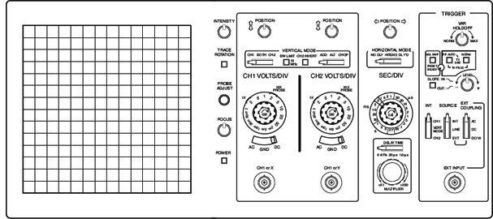
FIGURE 7.26
Even though oscilloscopes measure only voltage, it is possible to convert quantities such as current, strain, acceleration, pressure, and so on into voltages that the scope can use. To convert a current into a voltage, a resistor of known resistance is used; the current is measured indirectly by measuring the voltage drop across the resistor and then applying Ohm’s law. To convert strain, movement, and so on into voltage requires the use of transducers (electromechanical devices). By applying some calibrating tricks, the magnitude of, say, a pressure applied to a pressure transducer can be measured accurately.
Here, we’ll look at how oscilloscopes work. Also see Section 7.5.5, which discusses which type of scope you may need for your electronics laboratory.
7.4.1 How Scopes Work
While it is still possible to buy an analog oscilloscope that uses a cathode-ray tube, the majority of modern oscilloscopes are effectively a computer with fast analog-to-digital converters and an LCD or OLED display. As well as reducing the size and weight of the oscilloscope, the use of digital signal processing allows the scope to do things that an analog scope cannot do, such as generate clearer color-coded signals, provide the memory to pan left and right, allow you to export the display image to your computer, and show a frequency domain display. Digital scopes are comparable in price to their analog counterparts.
Interestingly, a veteran user of an analog oscilloscope would recognize the controls of a digital oscilloscope. The basic procedure for operating a digital oscilloscope is exactly the same as for an analog oscilloscope. It is actually easier to understand what an oscilloscope does by studying the workings of an analog oscilloscope than a digital one.
An analog oscilloscope is built around a cathode-ray tube. All the circuits inside the scope are designed to take an input signal and modify it into a set of electrical instructions that supply the tube’s electron gun with aiming instructions (the location where to focus the beam). Most of the knobs and switches on the face of a scope that are connected to the interior circuitry are designed to help modify the instructions sent to the cathode-ray tube. For example, these controls set voltage scale, time scale, intensity of beam, focus of beam, channel selection, triggering, and so on.
Cathode-Ray Tube
A cathode-ray tube consists of an electron gun (filament, cathode, control grid, and anode), a second anode, vertical deflection plates, horizontal deflection plates, and a phosphor-coated screen. When current flows through the filament, the filament heats the cathode to a point where electrons are emitted. The control grid controls the amount of electrons that flow through the electron gun, and thus controls the intensity of the beam. If this grid is made more negative in voltage, more electrons will be repelled away from the grid, thus reducing the electron flow.
The electron beam is focused into a sharp point-like beam by applying a controlling voltage or focus voltage to anode 1. The second anode is supplied with a large voltage that is used to give the electrons within the beam the additional momentum needed to cause a photon emission once they collide with the phosphor screen. The beam-focusing section of the tube is referred to as the electron gun.
There are two sets of electrostatic deflection plates (vertical and horizontal) that are set between the second anode and the inner face of the phosphor screen. One set of plates is used to deflect the electron beam vertically; the other set is used to deflect the beam horizontally. For example, when one of the plates of a pair of plates is made more negative in charge than the other, the electron beam will bend away from the negative plate and veer toward the more positive plate. (The electrons in the beam are usually moving with sufficient forward velocity that they never actually come in contact with the plates.) When a sawtooth voltage is applied to the horizontal plates, the gradually rising potential across the plates pulls the electron beam from the negative plate to the positive plate, causing the beam to scan across the phosphor screen. The vertical plates cause the electron beam to move up and down.
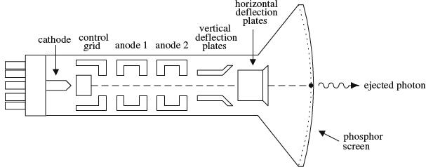
FIGURE 7.27
The next step in understanding how an oscilloscope works is knowing how an incoming signal is converted into a set of electrical signals or applied voltages that control the beam-aiming mechanisms of the cathode-ray tube. This is where the interior circuitry comes in.
7.4.2 Interior Circuitry of a Scope
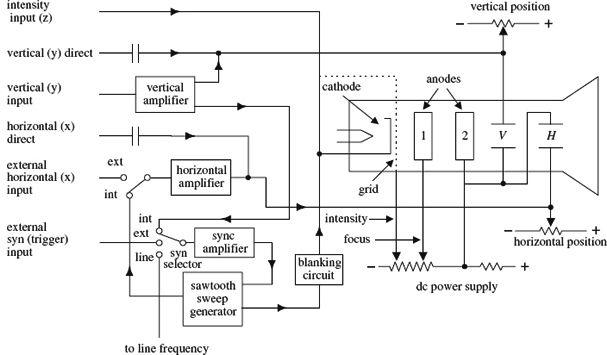
FIGURE 7.28
Let’s take a sinusoidal signal and see how the interior circuits of a scope convert it into something you can see on a display. The first thing you do is apply the sinusoidal signal to the vertical input. From the vertical input, the sinusoidal signal is sent to a vertical amplifier, where it is amplified so that it can supply enough voltage to deflect the electron beam. The vertical amplifier then sends a signal to the sweep selector. When the sweep selector is switched to the internal position (the other positions are explained in Section 7.4.5), the signal from the vertical amplifier will enter the sync amplifier.
The sync amplifier is used to synchronize the horizontal sweep (sawtooth in this case) with the signal under test. Without the sync amplifier, the display pattern would drift across the screen in a random fashion. The sync amplifier then sends a signal to the sawtooth sweep generator, telling it to start a cycle. The sawtooth sweep generator then sends a sawtooth signal to a horizontal amplifier (when horizontal input is set to internal). At the same time, a signal is sent from the sawtooth sweep generator to the blanking circuit. The blanking circuit creates a high negative voltage on the control grid (or high positive voltage on the cathode-ray tube cathode), which turns off the beam as it snaps back to the starting point. Finally, voltages from the vertical and horizontal amplifiers (sawtooth) are sent to the vertical and horizontal plates in a synchronized fashion. The final result is a sinusoidal pattern displayed on the scope’s screen.
The other features—such as vertical direct and horizontal direct inputs, external horizontal input, external trigger, line frequency, and xy mode—are described in Section 7.4.5.
It is important to note that the scope does not always use a sawtooth voltage applied to the horizontal plates. You can change the knobs and inputs and use another input signal for the horizontal axis. Controls such as intensity, focus, and horizontal and vertical position of the beam can be understood by looking at the oscilloscope circuit diagram.
7.4.3 Aiming the Beam
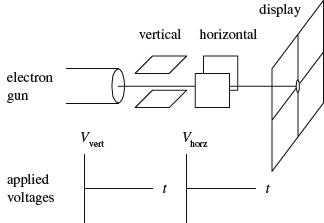
When no voltages are applied to the horizontal and vertical plates, the electron beam is focused at the center of the scope’s display.
When a dc voltage is applied to the vertical plates, while no voltage is applied to the horizontal plates, the electron beam shifts up or down depending on the sign of the applied voltage.
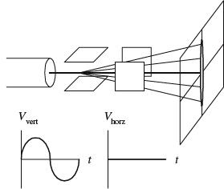
When a sinusoidal voltage is applied to the vertical plates, while no voltage is applied to the horizontal plates, a vertical line is traced on the y axis.
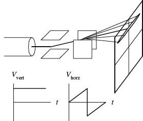
When a sawtooth voltage is applied to the horizontal plates, while no voltage is applied to the vertical plate, the electron beam traces a horizontal line from left to right. After each sawtooth, the beam jumps back to the left and repeats its left-to-right sweep.
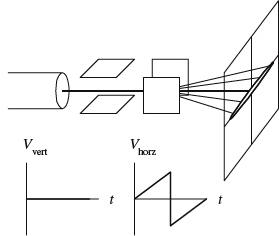
When a dc voltage is applied to the vertical plates, while a sawtooth voltage is applied to the horizontal plates, a horizontal line is created that is shifted up or down depending on the sign of the dc vertical plate voltage (+ or −).
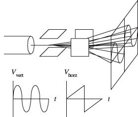
When a sinusoidal voltage is applied to the vertical plates and a sawtooth voltage is applied to the horizontal plates, the electron beam moves up as the signal voltage increases and at the same time moves to the left as the sawtooth voltage is applied to the horizontal plates. The display gives a sinusoidal graph. If the applied sinusoidal frequency is twice that of the sawtooth frequency, two cycles appear on the display.
FIGURE 7.29
7.4.4 Scope Usage
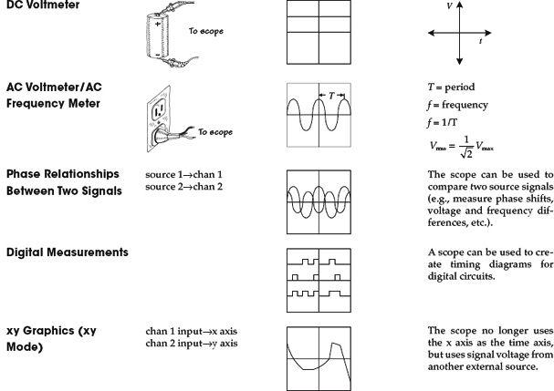
FIGURE 7.30
7.4.5 What All the Little Knobs and Switches Do
Figure 7.31 shows a typical layout of an oscilloscope control panel. The control panel of the scope you use may look slightly different (knob positions, digital display, number of input channels, and so on), but the basic ingredients are the same. If you do not find what you need in this section, refer to the oscilloscope user manual that comes with the scope.
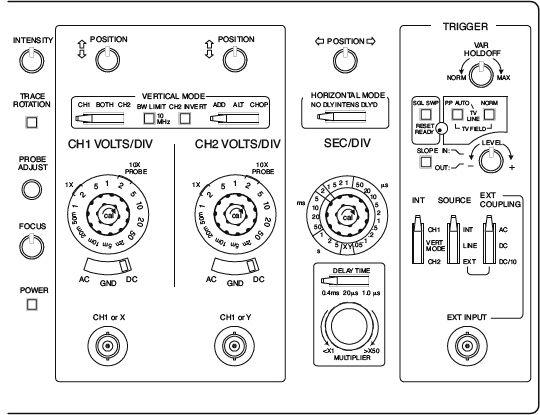
FIGURE 7.31
The control panel of an oscilloscope is divided into the following sections:
Vertical mode: This section of the scope contains all the knobs, buttons, and so on that control the vertical graphics of the scope. Most of these are associated with the voltage amplitude of an incoming signal.
Horizontal mode: This section of the scope contains all the knobs, buttons, and so on that control the horizontal portion of the graphics display. These usually are associated with the time base for the scope.
Trigger mode: This section of the scope contains all the knobs, buttons, and so on that control the way in which the scope “reads” an incoming signal. This section of the scope is probably the most technical. To understand triggering, read the upcoming “Trigger Mode” section.
Vertical Mode
The following are the vertical mode controls:
CH1 and CH2 coaxial inputs: Where input signals enter the scope.
AC, GRD, and DC switches:
AC: Blocks the dc component of the signal, passing only the ac part of the signal.
DC: Measures direct input of both ac and dc components of the input signal.
GRD: Grounds input, causing vertical plates in cathode-ray tubes to become uncharged, thus eliminating electron beam deflection. Used to recalibrate the vertical component of the electron beam to a reference position on the display after altering the vertical position of the knob.
CH1 VOLTS/DIV and CH2 VOLTS/DIV knobs: Used to set the voltage scale on the display. For example, 5 V/div means that each division (1 cm) on the display is 5 V high.
MODE switches:
CH1, BOTH (DUAL), CH2 switch: This switch allows you to pick between displaying a signal from channel 1 or channel 2, or display both channels at the same time.
NORM, INVERT: This switch lets you choose to display a signal normally or inverted.
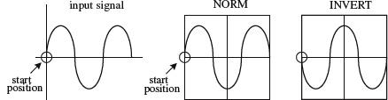
FIGURE 7.32
ADD, ALT, and CHOP:
ADD: Adds signals from channel 1 and channel 2 together arithmetically.
FIGURE 7.33
ALT: Alternate sweep is selected regardless of sweep time, and the NORM-CHOP switch has no effect.
CHOP: Operates the triggering SOURCE switch, providing automatic or manual selection of the alternate or chop method of dual-trace sweep generation.
POSITION knob: This knob allows you to move the displayed image up or down on the screen.
XY mode: When selected, the sweep rate (time base) supplied by the scope is switched off, and an external signal voltage applied to the channel 2 input replaces it.
Horizontal Mode
The following are the horizontal mode controls:
SEC/DIV knob: This knob sets the sweep speed or the scale for the horizontal time display. For example, 0.5 ms/DIV means each division (1 cm) on the display is 0.5 ms wide.
MODE switches:
NO DLY: This setting takes the horizontal signal and presents it to display immediately.
DLY’D: This setting delays the horizontal signal for a time you specify on the delay time section of scope. Use this to set the delay time of a signal.
SWEEP-TIME variable control: Sometimes known as the sweep frequency control, fine frequency control, or frequency vernier. Used as a fine sweep-time adjustment. In the extreme clockwise (CAL) position, the sweep time is calibrated by using the SWEEP TIME/CM switch. In the other positions, the variable control provides a continuously variable sweep rate.
POSITION knob: Moves the horizontal display left or right. This feature is useful when comparing two input signals. It allows you to align the wave patterns for comparison.
Trigger Mode
The following are the trigger mode controls:
EXT TRIG jack: Input terminal for external trigger signals.
CAL terminal: Provides a calibrated 1-kHz, 0.1-V peak-to-peak squarewave signal. The signal can be used to calibrate the vertical-amplifier attenuators and to check frequency compensation of probes used with the scope.
HOLDOFF control: Used to adjust holdoff time (ignore triggers until holdoff time has expired).
SINGLE: When a signal is nonrepetitive, or if it varies in amplitude, shape, or time, a conventional repetitive display can produce an unstable presentation. SINGLE enables the RESET switch for triggered single-sweep operation. The signal sweep can be used to photograph a nonrepetitive signal. Pushing the RESET button initiates a single sweep that begins when the next sync trigger occurs.
NORM: Used for triggered sweep operation. The triggering threshold is adjustable by means of the triggering LEVEL control. No sweep is generated in the absence of the triggering signal or if the LEVEL control is set in such a way as to allow the threshold to exceed the amplitude of the triggering signal (see Fig. 7.35).
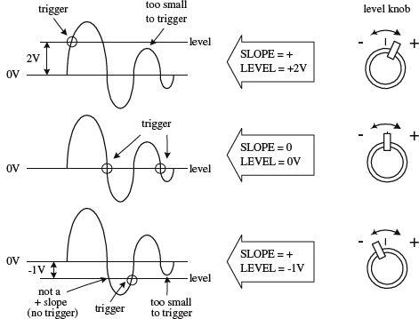
FIGURE 7.35
AUTO: Selects automatic sweep operation, where the sweep generator free-runs and generates a sweep without a trigger signal (this is often referred to as a recurrent sweep operation). In AUTO mode, the sweep generator automatically switches to triggered sweep operation if an acceptable trigger signal is present. The AUTO position is useful when first setting up the scope in order to observe a waveform. It provides a sweep for waveform operation until other controls can be set properly. DC AUTO sweep must be used for dc measurements and for signals of such low amplitude that the sweep is not triggered.
FIX: This is the same as the AUTO mode, except that triggering always occurs at the center of the sync trigger waveform regardless of the LEVEL control setting.
SLOPE button: Selects the point at which a scope will trigger. When positive slope is selected, the scope will begin a sweep only when the signal voltage crosses the LEVEL voltage during a positive sloping rise (see the description of the LEVEL knob). A negative slope setting initiates a sweep to occur when the signal crosses the LEVEL voltage during a negative sloping fall (see Fig. 7.34).
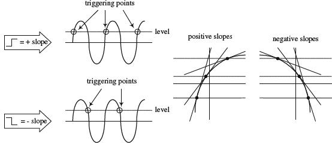
FIGURE 7.34
RESET button: When the triggering MODE switch is set to SINGLE, pushing the RESET button initiates a single sweep that begins when the next sync trigger occurs.
READY/TRIGGER indicator: In SINGLE trigger mode, an indicator light turns on when the RESET button is pushed in, indicating that a sweep is beginning. The light turns off when the sweep is completed. In the NORM, AUTO, and FIX triggering modes, the indicator turns on for the duration of the triggered sweep. The indicator also shows when the LEVEL control is set properly to obtain triggering.
LEVEL knob: Used to trigger a sweep. LEVEL sets the point when the scope will trigger based on the amplitude of the applied signal. The level can be shifted up or down. The READY/TRIGGER indicator turns on when the sweep is triggered, indicating that the triggering LEVEL control is within the proper range (see Fig. 7.35).
COUPLING switch: Used to select input coupling for the sync trigger signal.
AC: This is the most commonly used position. AC position permits triggering from 10 Hz to typically over 35 MHz (depending on your scope) and blocks any dc component of the sync trigger signal.
LF REJ: The dc signals are rejected, and signals below 10 kHz are attenuated; the sweep is triggered by only the higher-frequency components of the signal. This is useful for providing stable triggering when the trigger signal contains line-frequency components, such as 60-Hz hum.
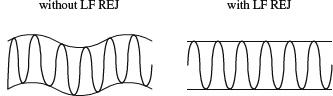
FIGURE 7.36
HF REJ: Attenuates signals above 100 kHz. This is used to reduce high-frequency noise or to initiate a trigger from the amplitude of a modulated envelope rather than the carrier frequency.
VIDEO: Used to view composite video signals.
DC: Permits triggering from dc to typically over 35 MHz. The DC coupling can be used to provide stable triggering for low-frequency signals that would otherwise be attenuated if measured in the AC setting. The LEVEL control can be adjusted to provide triggering at the desired dc level on the waveform.
FIGURE 7.37
7.4.6 Measuring Things with Scopes
A scope’s buttons and knobs must be set properly to obtain accurate measurements. If just one of these buttons or switches is set wrong, things can go haywire. You must make sure every button is set correctly.
This section covers a number of applications for oscilloscopes, such as making phase measurements between two signals. For each application, the procedure is to set the scope to the initial settings listed next, and then adjust particular buttons and knobs to put the scope in the proper configuration needed for that particular application.
Initial Scope Settings
First, start with the following settings:
Power switch: Off
Internal recurrent sweep (TRIGGER mode switch): Off (NORM or AUTO position)
Focus: Lowest setting
Gain: Lowest setting
Intensity: Lowest setting
Sync controls (LEVEL, HOLDOFF): Lowest settings
Sweep selector: External (EXT)
Vertical position control: Midpoint
Horizontal position control: Midpoint
Next, adjust the settings as follows:
Power switch: On
Focus: Until beam is in focus
Intensity: Desired luminosity
Sweep selector: Internal (use the linear internal sweep if more than one sweep is available)
Vertical position control: Until beam is centered on display
Horizontal position control: Until beam is centered on display
Internal recurrent sweep: On; set the sweep frequency to any frequency above 100 Hz
Horizontal gain control: Check that the luminous spot has expanded into a horizontal trace or line; return horizontal gain control to zero or lowest setting
Internal recurrent sweep: Off
Vertical gain control: To midpoint; touch the vertical input with a finger; the stray signal pickup should cause the spot to be deflected vertically into a trace or line; check that the line length is controllable by adjusting the vertical gain control; return the vertical gain control to zero or the lowest setting
Internal recurrent sweep: On; advance the horizontal gain control to expand the spot into a horizontal line
Measuring a Sinusoidal Voltage Signal
1. Connect the equipment as shown in Fig. 7.38.
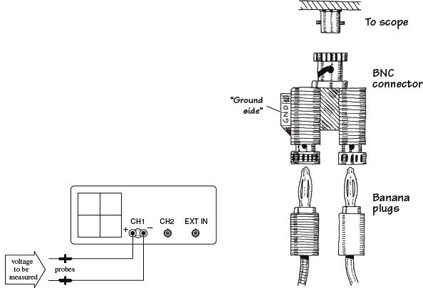
FIGURE 7.38
2. Set the scope to the initial settings listed in the previous section.
3. Fiddle with the vertical VOLT/DIV knob until the signal comes into view.
4. Set the input selector (AC/GRD/DC) to ground (GRD).
5. Switch the scope to the internal recurrent sweep. Fiddle with the SEC/DIV knob until the electron beam is tracing out a desired path of the screen.
6. Now you should have a horizontal line in view. Center this line on the x axis or some desired reference position by adjusting the vertical position knob. Make sure you do not fiddle around with the vertical position knob after it has been set to the desired reference point. If you do, your measurements will be offset. If you think you have accidentally moved the vertical position line, set the input selector to GRD and recalibrate.
7. Set the input selector switch (AC/GRD/DC) to DC. Connect the probe to the signal being measured.
8. Fiddle with the vertical and horizontal VOLT/DIV knob and SEC/DIV knob to get the signal into view.
9. Once you have an image of your signal on the screen, take a look at your VOLT/DIV and SEC/DIV knobs and record these settings. Now, visually measure the period, peak-to-peak voltage, and so on of the displayed image, using the centimeter grid lines on the scope’s screen as a ruler. To find the actual voltages and times, multiply the measurement made in centimeters by the VOLT/DIV (or VOLTS/cm) and SEC/DIV (SEC/cm) recorded set values. The example in Fig. 7.39 shows how to calculate the peak-to-peak voltage, root-mean-square voltage, period, and frequency of a sinusoidal waveform.
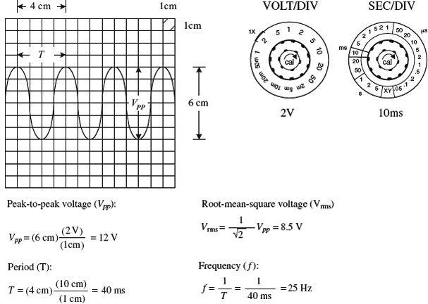
FIGURE 7.39
Measuring Current
As mentioned earlier, oscilloscopes can measure only voltages; they do not directly measure currents. However, with the help of a resistor and Ohm’s law, you can trick the scope into making current measurements. You simply measure the voltage drop across a resistor of known resistance and let I = V/R do the rest. Typically, the resistor’s resistance must be small to avoid disturbing the operating conditions within the circuit that is being measured. A high-precision 1-Ω resistor is often used for such instances.
Let’s now take a look at the specifics of how to measure currents with a scope.
1. Set up your equipment as shown in Fig. 7.40.
FIGURE 7.40
2. Set the scope to the initial settings listed earlier in the “Initial Scope Settings” section.
3. Apply a dc current to be measured through the resistor. Here, we’ll use a 1-Ω resistor to make the calculations simple and to avoid altering the dynamics of the circuit being tested. The wattage of the resistor must be at least 2 Ω times the square of the maximum current (expressed in amps). For example, if the maximum anticipated current is 0.5 A, the minimum wattage of the resistor should be 2 Ω × (0.5 A)2 = 1/2 W.
4. Measure the voltage drop across the resistor using the scope. The unknown current will equal the magnitude of the voltage measured, provided that you stick with the 1-W resistor. Figure 7.41 shows some example measurements, two of which describe how to measure RMS and total (dc + ac) effective currents.
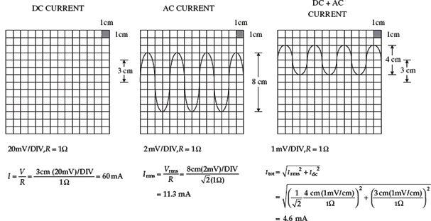
FIGURE 7.41
Phase Measurements Between Two Signals
Suppose that you wish to compare the phase relationship between two voltage signals. To do so, apply one of the signals to CH1 and the other to CH2. Then, using the DUAL setting (or BOTH setting), you can display both signals at the same time and align them side by side to compare the phased difference between them. Here’s how to view both signals:
1. Step up your equipment as shown in Fig. 7.42.
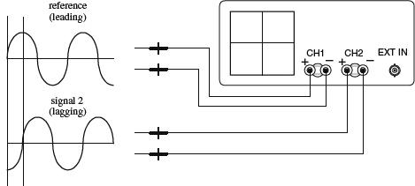
FIGURE 7.42
2. Set the scope to the initial settings listed earlier in the “Initial Scope Settings” section. Note that cables should be short, of the same length, and have similar electrical characteristics. At high frequencies, a difference in cable length or a difference in electrical characteristics between cables can introduce improper phase shifts.
3. Switch the scope’s internal recurrent sweep to on.
4. Set the scope to dual trace (DUAL) mode.
5. Fiddle with the CH1 and CH2 VOLT/DIV settings until both signals are of similar amplitudes. This makes measuring phase differences easier.
6. Determine the phase factor of the reference signal. If one period (360°) of a signal is 8 cm, then 1 cm equals one-eighth of 360°, or 45°. The 45° value represents the phase factor (see Fig. 7.43).
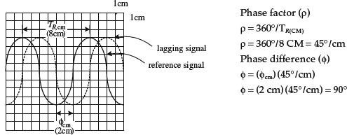
FIGURE 7.43
7. Measure the horizontal distance between corresponding points (for example, corresponding peaks or troughs) of the two waveforms. Multiply this measured distance by the phase factor to get the phase difference (see Fig. 7.43). For example, if the measured difference between the two signals is 2 cm, then the phase difference is 2 × 45°, or 90°.
7.4.7 Scope Applications
The ability for an oscilloscope to “freeze” a high-frequency waveform makes it an incredibly useful instrument for testing electronic components and circuits whose response curves, transient characteristics, phase relationships, and timing relationships are of fundamental importance. For example, scopes are used to study the shape of particular waveforms (such as squarewave, sawtooth, and so on). They are used to measure static noise (current variation caused by poor connections between components), pulse delays, impedances, digital signals, and other values. The list goes on. This section presents a few example scope applications.
Checking Potentiometers for Static Noise
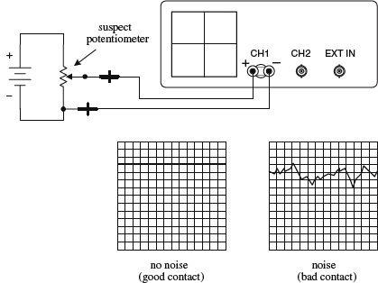
Here, a scope is used to determine if the sliding contact of a potentiometer is faulty. A good potentiometer will present a solid voltage line on the scope’s screen, whereas a bad potentiometer will present a noisy pattern on the display. Before concluding that a potentiometer is bad, make sure that noise was not present beforehand. For example, the cables used in this test may have been at fault.
FIGURE 7.44
Pulse Measurements
Scopes are often used to study how square pulses change as they pass through a circuit. This figure, along with the following definitions, shows some of the pulse alterations that can occur.
Rise time (tr): The time interval during which the amplitude of the output pulse changes from 10 to 90 percent of the maximum value
Fall time (tf): The time interval during which the amplitude of the output pulse changes from 90 to 10 percent of maximum value
Pulse width (tw): The time interval between the two 50 percent maximum values of the output pulse
Time delay (td): The time interval between the beginning of the output pulse (t = 0) and the 10 percent maximum value of the output pulse
Tilt: A measure of the fall of the upper portion of the output pulse
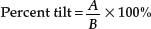
Overshoot: A measure of how much of the output pulse exceeds the upper portion of the input pulse
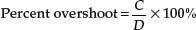
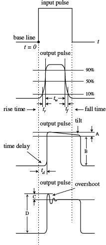
FIGURE 7.45
7.4.8 Measuring Impedances
The method of measuring impedance presented here makes use of comparing the reflected pulse with the output pulse. When the output signal travels down a transmission line, part of the signal will be reflected and sent back along the line to the source whenever the signal encounters a mismatch or difference in impedance. The line has a characteristic impedance. If the line impedance is greater than the source impedance (thing being measured), the reflected signal will be inverted. If the line impedance is lower than the source impedance, the reflected signal will not be inverted.
1. Set up the equipment as shown in Fig. 7.46.
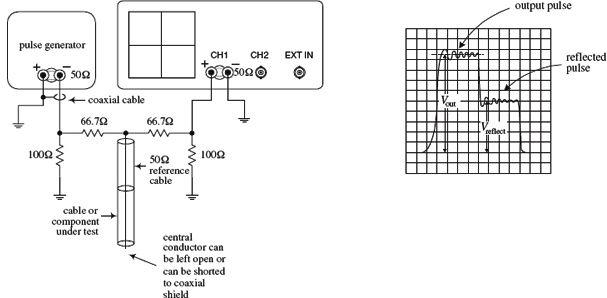
FIGURE 7.46
2. Set the knobs and switches to the initial settings listed in Section 7.4.6.
3. Switch the internal recurrent sweep on.
4. Set the sweep selector to INTERNAL.
5. Set the sync selector to INTERNAL.
6. Switch on the pulse generator.
7. Fiddle with the VOLT/DIV, SEC/DIV knobs until the output pulse is displayed.
8. Observe the output and reflected pulses on the scope. Measure the output voltage (Vout) and the reflected voltage (Vreflect).
9. To find the unknown impedance, use the following equation:
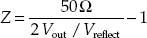
The 50-Ω value represents the characteristic impedance of the coaxial reference cable.
FIGURE 7.47
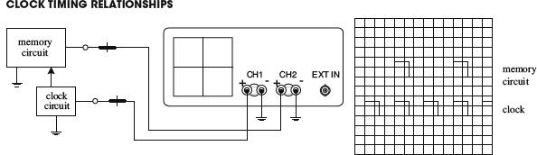
FIGURE 7.48
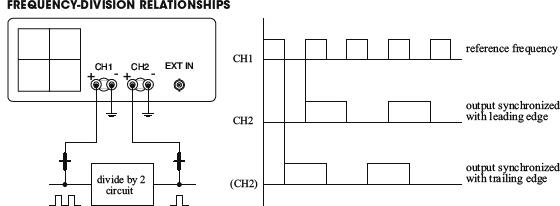
FIGURE 7.49
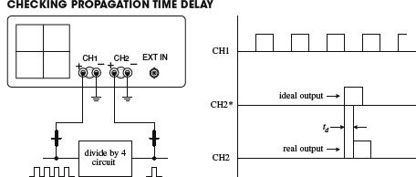
FIGURE 7.50
FIGURE 7.51
7.5 The Electronics Laboratory
To make electronics a safe and enjoyable experience, you need a decent electronics laboratory. In this section, you’ll learn key features common to all good electronics laboratories. You’ll discover how to set up a work area to limit external electromagnetic noise from coupling with your circuits, as well as how to prevent ESD from damaging sensitive ICs. You’ll also learn about the various kinds of test equipment, prototyping equipment, and tools needed for troubleshooting and designing circuits. If you are serious about electronics, you will naturally end up with a setup like this. However, to get started, you do not need to have all this equipment; a desk, soldering iron, and multimeter will get you a long way.
Keep in mind that the most important tool you’ll use when doing electronics is your brain. So if you lack a piece of equipment or tool listed here, see how you can work around the problem. However, be aware that you may spend more time than is necessary locating problems or constructing “flaky” circuits, simply because you lack the right gear.
Finally, if some of the information that follows seems a bit over your head, don’t panic. Most of the technical information relates to test equipment specifications and troubleshooting nomenclature. The aim is to give you a good enough understanding to determine which features are important when purchasing items.
7.5.1 Work Area
Get a sturdy, large workbench so you can spread stuff out. Ideally, it should be equipped with a ground plane of metal that can be easily connected to and disconnected from earth ground (the green wire ground of an ac outlet). The ground plane helps prevent RF background radiation, 60-Hz noise, and other external electromagnetic and electrostatic disturbances from coupling with your circuit. Place an insulating sheet or cardboard between the bench and the circuit you’re testing so that nothing shorts to ground.
For casual measurements that don’t require high precision, you can usually get by without a ground plane. If you run into interference problems and your bench doesn’t have a ground plane, simply place your circuit on a double-insulated metal sheet that’s soldered to a wire connected to ground. A grounded, single-sided copper-clad board, placed copper side up, with a cardboard sheet over the top, will also work.
You can find a number of electronics workbenches online, or you can make your own. A design plan for a five-shelf, 31 × 72 × 72-in. metal-frame workbench constructed from parts from your local hardware store is provided at the end of this chapter (Section 7.5.23).
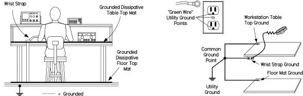
FIGURE 7.52 A workstation that has been set up to minimize ESD by using grounded dissipative mats and a wrist strap. For reliable grounding, use separate grounding wires for each mat and wrist strap, running them directly to a common ground point.
Damaging ESD between your body and sensitive ICs can be eliminated at your workbench by making sure your tabletop work area, your body, and the floor area are grounded to earth or a common reference. Note that you should not directly ground yourself—the risk of line voltage shock is a real potential hazard. Instead, invest in a wrist strap that houses a series 1-MΩ resistor. The resistor limits potentially lethal current flow, while providing a sufficient path for ESD.
If you’re using a rubber mat on a concrete floor to limit the risk of electrical shock, make sure it’s made with antistatic rubber; otherwise, you may actually be increasing the risk of ESD. For carpeted areas, you can buy a special antistatic ground mat or spray it with antistatic spray. DESCO, 3M, and a number of other manufacturers make ESD-protective work mats and complete workstation grounding kits.
Also, make sure that all equipment is properly grounded. This includes grounding your soldering iron’s tip when soldering sensitive components. Though most equipment is already grounded to earth through the three-wire power cords, don’t assume the ground is without fault. Test all grounds to see if they are at the same potential. Use an ohmmeter to test the resistance between earth ground and equipment ground posts, plugs, and chassis bodies. If an item is not properly grounded and you touch it, you’ll become the best path to ground. Good grounding also eliminates ground loops and limits external noise from coupling with your circuit.
7.5.2 Test Equipment
You can obtain a vast assortment of equipment for your laboratory. The limiting factor is your budget. A great place to look for used equipment is eBay. You’ll find new, top-of-the-line items all the way down to the clunkers. However, be aware that you can find new equipment that’s not that much more expensive than the used stuff by checking out electronics sites such as www.web-tronics.com and others listed in Section 7.5.20.
Do your homework before purchasing anything. Make sure the specs (bandwidth, input impedance, accuracy, and so on) stand up to the testing you have in mind. Don’t be misled into thinking that you must have the newest and most expensive instruments to work with electronics. Unabused equipment that is 20 years old or even older can be remarkably reliable. Just be certain that the seller can verify that the equipment is in working order and has been recently calibrated. Also, ask for an inspection period before the deal is final.
7.5.3 Multimeters
If you plan to do a lot of serious bench work, get a bench digital multimeter (DMM) with at least five-digit resolution. For more digits and higher accuracy, expect to pay considerably more. Be sure the meter comes with autorange lockout so it can achieve the highest accuracy and speed. For many circuits, it’s important that the meter come with a high-impedance input (>10,000 MΩ) that stays at high impedance up to 20 V or so. This prevents the meter from loading down your circuit and reduces measurement errors.
There are a number of meters with 10-MΩ inputs, which are okay if you don’t see the 10 MΩ being a problem. Look for meters with four-wire resistance measurement capability—a feature that eliminates errors caused by test lead resistance. A few decent meters you can find on eBay include the HP3468A (5.5-digit), the HP34401A (6.5-digit), and the HP3485A (8.5-digit).
If you are on a budget, then look for a hand-held DMM with a pull-out stand on the back, a large display, and a backlight. These make a reasonable alternative to a high-quality multimeter.
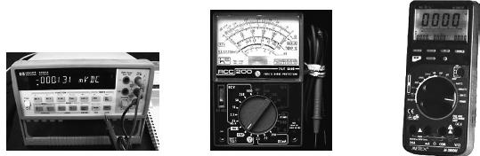
FIGURE 7.53 Left: HP 34401A bench DMM with 6.5-digit resolution and computer interface. Center: MetRex 3¾ digital DMM loaded with handy features, such as an RS232 interface, true RMS, temperature, inductance, capacitance, logic analyzer, transistor hFE tester, diode tester, and frequency counter. Right: A simple analog meter useful for monitoring trends.
It’s also nice to have a few auxiliary meters handy for taking a number of measurements at the same time. Get a hand-held DMM with true RMS and at least three to four digits of resolution. These meters will run you anywhere from $50 to $300, although you shouldn’t need to pay more than $100 to $150 for a decent one. Handheld meters with additional features—such as a capacitance tester, an inductance tester, diode and transistor testers, a frequency counter, and a thermometer—come in handy, especially when prototyping. You never know when you’ll need to check polarity of an LED, check the hFE of a transistor, or check whether your guess at a capacitance label is on target.
Analog meters, though not as popular today, are still useful. They have inferior accuracy and resolution when compared with a DMM, but when you watch an ordinary analog meter, your eye can detect trends or rates of change that are hard to spot on a DMM, especially in the presence of noise or jitter. Another advantage of an analog meter is its passive nature; it won’t inject noise into your circuit, as a digital meter is capable of doing. An analog meter will also tell you things about a slowly moving signal, as you don’t just get an instantaneous reading but can see how fast the reading is changing. This is something that you cannot really see on a digital meter. Some digital meters get around this problem by providing a barograph-type display to accompany the numbers.
As a final option, you can check out some PC-based DMMs. These devices plug in to your computer directly through an expansion slot (such as the PCI slot) or through a box that is linked to your computer via a serial, parallel, or USB cable. Current technology has made PC-based performance much better than in the past. Check out National Instruments’ NI PXI-4070 DMM, which is a 6½-digit DMM—a very impressive device. Consider these instruments if you plan to do data logging.
7.5.4 DC Power Supplies
Probably the single most used piece of equipment that you will use is a lab dc power supply to provide a steady dc voltage. Get a variable dc constant-voltage/constant-current supply that can be configured for single- and split-polarity applications, as follows:
A single-polarity arrangement—say, a +12-V supply used for driving a dc motor—would use the positive terminal (+) as the source and the negative terminal (-) as the return.
A split supply—say, a ±15-V one used to power an operational amplifier that swings both positive and negative in reference to a common ground—would use the positive terminal (+15 V), the negative terminal (−15 V), and the common terminal (COM), which acts as a 0-V reference.
Some supplies, like the center supply shown in Fig. 7.54, house two separate variable voltage sources. To create a split power source using such a supply, the two variable sections are connected in series using a jumper cable; the common becomes the junction point where the jumper cable is located. (You’ll typically need to flip a switch on the supply to specify series mode.)
Buy a model that has built-in current and voltage displays. The current being drawn by a circuit is a great indicator of health or ill health.
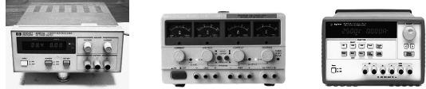
FIGURE 7.54 Constant current/voltage supplies with current lockout and voltage controls. The supply to the left comes with a negative, common, and positive terminal. The center supply houses three independent dc sources, two of which are variable, while the other is fixed at 5 V. The variable sections can be used independently, in series, or in parallel. To create a split supply, the two sections are placed in series, and the common becomes the junction between the two sections. The supply to the right houses split and fixed (5-V) sections. It can save and recall three voltage/current settings.
Your supply should also come with an earth ground terminal that is internally connected to earth ground through the ac power cord’s ground wire, which has a conductive path to the ground rod buried outside your home. Many circuits, and most test equipment (oscilloscopes, function generators, and so on), will use the earth ground as a reference. For example, the outer BNC sleeve of an oscilloscope’s input channel or the output sleeve of a function generator’s output is typically earth ground.
Also look for supplies that come with an additional fixed +5-V output useful for powering logic circuits. These outputs are typically rated for 3 A.
Your supply should come with fine and coarse adjustment controls and current-limit lockout. Avoid digital current/voltage controls, since they don’t let you continuously sweep up and down while monitoring for trends.
A nice supply, available for about $500 used, is the HP3631A shown in Fig. 7.54. It comes with save and recall features that allow you to store and recall up to three power supply setups. It also comes with an RS-232 interface. If you can’t afford a supply like this, you can find other supplies—minus all the bells and whistles—that will do the job. There are a number of other programmable supplies out there, but they tend to be rather expensive. Another option is to build your own supply, as discussed in Chap. 11.
Switch-mode variable power supplies can be bought for less than $100 for a single output and around $150 for dual-channel. If you are trying to keep costs down and are not going to be doing much work that requires a split power supply, then a single-channel device may be just fine for you.
Another useful troubleshooting tool is a set of batteries—alkaline, NiHM, or whatever is suitable. You can use a stack of them to create any desired voltage—for example, two 9-V batteries for +18 V or ±9 V. Batteries are a useful alternative power supply for low-noise circuits, such as in a preamplifier. If the preamp’s output doesn’t get quiet when you substitute your batteries in place of your ordinary supply, don’t blame the power supply. You can also use batteries to power low-noise circuits, like those sealed in a metal box, without contaminating their signals with power supply noise.
7.5.5 Oscilloscope
Get a bench oscilloscope (which displays voltage waveforms) with at least two channels so that you can track two signals at once. Also, make sure it comes with a bandwidth of at least 100 MHz.
Even when working on slow amplifier circuits, a wide-bandwidth scope is important to catch high-frequency oscillations. A wide bandwidth is also important for catching higher-frequency components or harmonics of nonsinusoidal waveforms. For example, to catch the fifth harmonic of a 100-MHz square waveform, you’ll need a more expensive scope (and probe) with a bandwidth of 500 MHz.
As a rule of thumb, to make accurate frequency measurements, your scope’s bandwidth should be three to five times greater than the fundamental frequency waveform you’re measuring. To make truly accurate amplitude measurements that are not dominated by the scope’s frequency response, you’ll need a bandwidth greater than ten times the frequency being measured. Signal measurements on frequencies beyond the scope’s bandwidth will result in attenuation drops greater than -3 dB, and rise and fall times that can literally turn a nice, clean squarewave into a weak sine wave. Figure 7.55 shows attenuation and rise-time effects on a 50-MHz squarewave measured with 20-MHz, 100-MHz, and 500-MHz scopes.
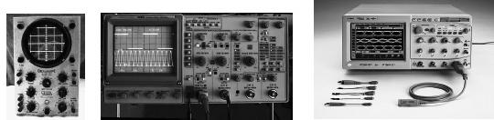
FIGURE 7.55 From vintage to high-tech, scopes will cost you accordingly. Left: An Eiko TR-410 10-MHz scope for around $30 on eBay. It’s an incredibly slow scope by today’s standards, but it’s okay for general-purpose work on low-frequency circuits. Center: Tektronix 2246 100-MHz, four-channel analog oscilloscope with voltage and time cursors with on-screen readout. For about $400, used, on eBay, it’s a good investment for general-purpose testing. Right: Cutting-edge Infiniium 54850 oscilloscope with InfiniiMax 1130 probes has a 6-GHz bandwidth with a 20-Gsa/s sample rate on all four of its channels. It comes with a user interface based on Microsoft Windows XP Pro, and supports CD-RW, dual-monitor, and third-party software. Don’t expect to be able to buy one for personal use, unless you plan on robbing a bank. At the other end of the cost spectrum, new LCD-based scopes can be bought for around $55 (check out http://store.nkcelectronics.com/digital-storage-oscilloscope-very-low-cost.html) and take up a lot less bench space than a vintage scope.
When buying a scope, you’ll need to decide between an analog or a digitizing scope. In terms of recent technology, digital scopes are more powerful and more responsive. Analog scopes do have some positives, such as familiar controls, instantaneous display updating for real-time adjustments, direct dedicated controls for often-used adjustments, and a reasonable price range. However, they lack accuracy, have no pretrigger viewing capability and limited bandwidth (seldom exceeds 400 MHz), and can’t store waveforms into memory for later recall.
Modern digitizing scopes, on the other hand, have display storage; high accuracy; pretrigger viewing capability; peak/glitch detection; automatic measurements; computer and printer connectivity; waveform-processing capability, including waveform math functions; display modes such as averaging and infinite persistence; and self-calibration. A good digitizing scope will cost you a considerable amount. Expect to pay $1,000 or more for a used one, and as much as $50,000 for a new, top-of-the-line model. However, the price of digital scopes is falling all the time, and a dual-channel 50 MHz or 250 M samples/second (MS/s with more features than you could shake a stick at can be bought for less than $500. The price rises steeply with bandwidth, so check what is available and read the reviews before you buy.
If you decide on a digitizing scope, make sure it comes with a high sample rate, which is the rate at which the scope can take a “snapshot” of the incoming signals. A higher sample rate translates into more real-time bandwidth and better real-time resolution. Most manufacturers use a sample rate–to–real-time bandwidth ratio of at least 4:1 (if digital reconstruction is employed) or 10:1 (without reconstruction) to prevent aliasing. Also, make sure to consider the scope’s memory depth.
FIGURE 7.56 Screenshots show the same 50-MHz squarewave displayed on three different scopes with different bandwidths. The 500-MHz scope shows the best high-frequency detail and representation of rise times. As you move down in bandwidth, notice the increase in rise time and amplitude attenuation. The bandwidth of your scope should be at least three times the fundamental frequency of the fastest signal you expect to measure, and as much as ten times more for accurate amplitude measurements.
An alternative to a stand-alone oscilloscope is a PC-based scope. These scopes use your computer and the software running on it as the testing component. Most PC-based scopes are composed of an interface card or adapter. The card adapter connects to your PC via an expansion slot (such as an ISA or a PCI slot), via a serial, parallel, or USB port, depending on the model. A test probe then connects to the interface. Software on your PC interprets the data coming through the interface and displays the results on the monitor. Low-cost (low-performance) PC-based scopes cost around $100, but the price goes up considerably with bandwidth.
Unless you’re focused more on data acquisition than circuit testing and trouble-shooting, I suggest a stand-alone scope over a PC-based one. Having to boot up a computer before you can use the scope becomes irritating. Although a number of high-end PC-based scopes come with decent bandwidth, the affordable ones will usually come with crummy bandwidth (20 MHz or so). Expect to pay upward of $1,000 for one with bandwidth of at least 100 MHz.
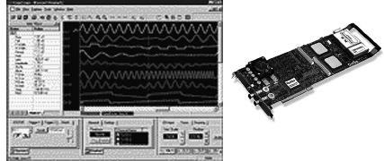
CompuScope 8500 can sample one analog input at speeds up to 500 MS/s with 8-bit resolution and data storage in on-board memory. It has two separate inputs: a 1-MΩ input and a very high-bandwidth 50-Ω input. GageScope software running on your computer captures data from the CompuScope plug-in, analyzes the data, and automatically calculates the result. CompuScope 8500 can measure rise times, fall times, frequency, pulse width, and amplitude, and it can even perform spectral analysis.
FIGURE 7.57
7.5.6 Oscilloscope Probes
Get suitable probes for your scope, preferably three: one for a trigger and two for separate channels. Though it’s possible to connect a scope to your circuit with just a bare wire, that’s a bad idea. The bare wire can load the scope’s input amplifier with its high capacitance and inductance, but it can also cause a short.
Multimeter test leads or hookup wire rigged to a BNC connector will work for certain applications (usually low frequency), but they can pick up external radiation (such as 60-Hz power, radio, TV, and fluorescent lighting) that can corrupt your signals. Using a shielded, unterminated coaxial cable with makeshift probe wires can reduce stray pickup; however, the coaxial cable, in conjunction with a standard scope, can introduce a new set of problems. The inherent capacitance of a coaxial cable (typically 100 pF/m) has the tendency to capacitively load a circuit under test, while the cable will experience resonant effects at certain frequencies, generating signal reflections that result in signal corruption. For this reason, it’s a bad idea to lengthen a dedicated probe cable by attaching a coaxial cable, unless you’re dealing with special 50-Ω probes and 50-Ω scopes.
Without the appropriate probe, you can run into all sorts of problems. The main problem you’ll face is circuit loading, where the thing you’re using to probe your circuit will draw too much current and result in a voltage drop. Also, if the thing you’re using has built-in capacitance and inductance (for example, coaxial cable), you’ll run into capacitive-loading problems that will affect timing measurements, as well as inductive-loading problems that will distort signals. With a long ground probe wire, the distributed internal inductance of the wire will interact with the probe’s capacitance and cause ring-ing—as seen as a sinusoid of decaying amplitude impressed on pulses. These loading effects may also cause a working circuit to malfunction or a nonwork-ing circuit to spring to life.
Even when using dedicated oscilloscope probes, you’ll still run into these loading problems, and they will grow more severe with increasing frequency. At higher frequencies, the capacitive reactance of the probe’s tip decreases, resulting in increased loading. This will limit the bandwidth and increase rise times. In terms of resistive loading, a probe with lower built-in resistance will cause greater attenuation.
The best thing to do when selecting a probe is to find your scope’s manual and see what kind of probes it recommends. If a manual is nowhere to be found, check out the oscilloscope or probe manufacturers’ websites for suggestions. Otherwise, consider the following:
Make sure that the probe’s input connectors match those of your scope. Most scopes come with BNC-type input connectors; others may use SMA connectors. More sophisticated scopes may have specially designed connectors to support readout, trace, probe power (for active probes and differential probes), and other special functions.
Choose a probe whose input resistance and capacitance match the input resistance and capacitance of your scope. Matching is critical for ensuring proper signal transfer and fidelity. The input resistance and capacitance of a probe are used to describe its loading effects. At low frequencies (<1 MHz), the probe input resistance is the key factor for loading of the circuit being tested. At higher frequencies, the probe input capacitance becomes the significant factor.
Scopes come with either a 1-MΩ input resistance or a 50-Ω input resistance (some come with both). A 1-MΩ input is most common and is used for general-purpose testing, while a 50-Ω input is used within 50-Ω environments where high speed and low loading are needed. You must use 1- MΩ probes with 1-MΩ inputs, and 50-Ω probes with 50-Ω inputs. An exception to this one-to-one resistance matching occurs when using attenuator probes. For example, a 10X probe used with a 1-MΩ input will have a 10-MΩ input resistance, while a 10X probe used with a 50-Ω input will have a 500-Ω input resistance.
The input capacitance of a scope, unlike its standard input resistance (1 MΩ or 50 MΩ) can vary, depending on the scope’s bandwidth and other design features. Though a common input capacitance for many 1-MΩ scopes is usually 20 pF, it’s entirely possible your scope has a different value, between 5 pF and 100 pF or so. To match the probe’s capacitance with that of the scope, choose a probe whose capacitance is within the same range of your scope, and then narrow things down by adjusting the probe’s compensation network, using the probe’s trimmer capacitor. This is referred to as “compensating your probe”. It’s important to note that trimming will have little effect if the input capacitance of the scope is outside the compensation range of the probe.
Now that you have some probe theory behind you, let’s take a look at some real probes.
Passive Probes
Practically speaking, the most common probe used for general-purpose testing is a passive probe built for 1-MΩ input scopes. These passive probes are constructed of wires, connectors, and, when needed, compensation or attenuation resistors and capacitors. There are no active components within these probes, such as transistors or amplifiers, and thus they are quite rugged, relatively cheap, and easy to use.
Passive voltage probes come in 1X, 10X, 100X, and 1000X forms, presenting no attenuation (1X), 10 times the attenuation (10X), 100 times the attenuation (100X), or 1000 times the attenuation (1000X). The attenuating probes act to multiply the measurement range of the scope by using an internal resistance that, when taken with the input resistance of the scope, creates a voltage divider. For example, a typical 10X probe used with a 1-MΩ scope houses an internal 9-MΩ resistor that creates a 10:1 attenuation ratio at the input channel. This means the displayed signal will be one-tenth the magnitude of the measured signal. This allows you to test a signal that might otherwise overload the scope circuits. (Table 7.2 shows a schematic of a typical 10X probe.)
TABLE 7.2 Overview of the Various Kinds of Oscilloscope Probes
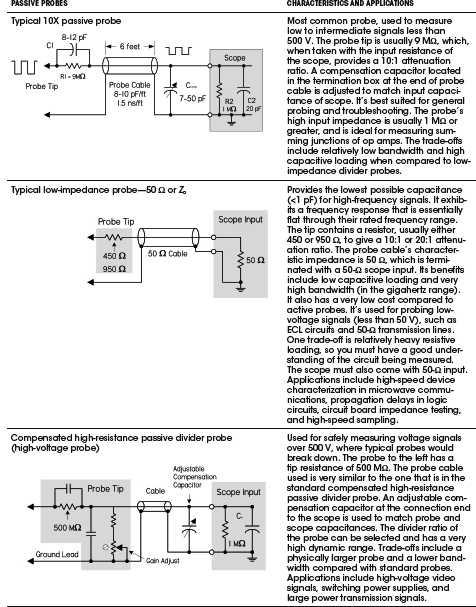
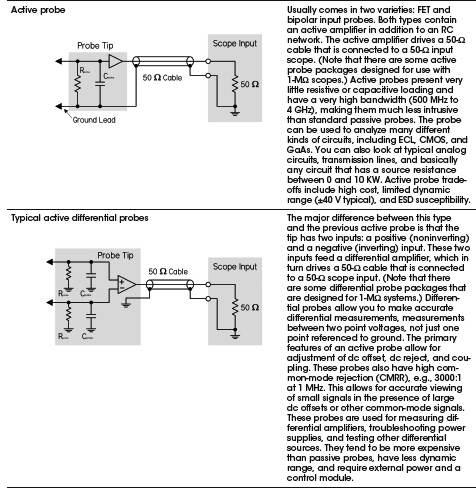
A 10X probe, when compared to a 1X probe, will also cause less circuit loading, since it draws less current as it measures. A 10X probe has significantly larger bandwidth (around 60 to 300 MHz) when compared to that of a 1X probe (around 4 to 34 MHz). The 10X probe introduces about ten times less capacitance. Bandwidth differences also apply to 100X and 1000X probes.
Look for switchable 1X/10X, 10X/100X, and 100X/1000X probes that house two probes in one. You switch between the two modes by flipping the switch on the probe’s body. These probes are very convenient when jumping between signals of varying magnitudes. However, keep in mind that when you switch modes, your bandwidth will change along with the voltage scale.
Also note that typical 1X and 10X probes have a maximum voltage rating of around 400 to 500 V. The 100X and 1000X probes fare better at around 1.4 kV and 20 kV, respectively. For high-voltage work extending up to 20 kV, get a specially designed high-voltage passive probe.
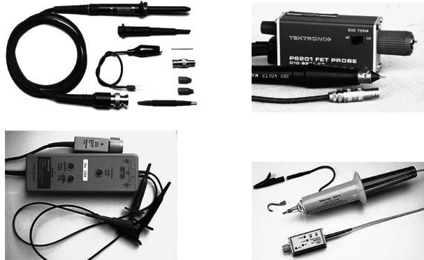
FIGURE 7.58 (a) General-purpose 1X/10X passive probe with assortment of probe attachments designed for use with a 1-MΩ, 20-pF scope. At 1X, there is no attenuation, but the bandwidth is limited to between 4 and 34 MHz. At 10X, signals are reduced to one-tenth their original magnitude, while the bandwidth increases from between 60 and 300 MHz, depending on the probe and scope. (b) Active probe used primarily for high-frequency, low-voltage work. An active probe’s internal FET provides extremely low-input capacitance (>1 pF) that allows for high bandwidths (500 MHz to 6 GHz) and minimal circuit loading. The probe typically comes with a 50-Ω output impedance to drive a 50-Ω cable, making it possible to increase probe cable length. It may require a special scope with a power connector/signal connector, or an external power source. A limited voltage range of ±40 V is typical. (c) Differential probe houses an internal differential amplifier that allows you to make differential measurements (between any two points, not just between one point and ground). Differential probes come in 50-Ω and 1-MΩ packages, and may require a special scope with a power connector/signal connector or an external power source. (d) High-voltage probe used for heavy-duty measurements of voltages over 2.5 kV. The P6015A from Tektronix can measure dc voltages up to 20 kV (RMS) and pulses up to 40 kV. It comes with a bandwidth of 75 MHz. Other high-voltage probes, often termed 100X, 1000X, will provide varying maximum voltage and bandwidth limits.
Let’s not forget 50-Ω passive probes and 50-Ω scopes. Probes used with 50-Ω scopes are often referred to as ZO probes. The ZO refers to the characteristic impedance of a cable, which in this case is 50 Ω for the coaxial probe cable. These probes offer much higher bandwidth than the best 1-MΩ probes, approaching the gigahertz range, with rise times of 100 picoseconds or faster. Fifty-ohm systems are used primarily for high-speed circuits.
For extremely fast (>500 MHz) or high-impedance circuits, passive probes (even 10X) used with 1-MΩ scopes may not cut it. They can cause severe circuit loading, as well as attenuation and timing degradation. A better probe for high-speed work is an active probe. Active probes house internal FETs or other active devices that present an extremely high input resistance and low input capacitance (1 pF or so) to the input signal. With external power, the active devices amplify the signal without drawing power from the circuit being tested.
Active probe bandwidths range from 500 MHz to 4 GHz. An FET probe usually has a 50-Ω output impedance and drives a 50-Ω cable, though specially designed active probes with external boxed circuitry are made for 1-MΩ scopes. This allows the distance from the probe tip to the instrument to be increased within the practical limits of the probe amplifier system and the limitations of the coaxial cable. Another benefit to using active probes is that the length of the ground lead isn’t as critical as it was with passive probes due to the probe’s low input capacitance that reduces ground lead effects. One shortcoming of active probes is their limited voltage range—typically from ±0.6 to ±10 V—and their maximum voltage rating of ±40 V.
Differential Probes
Another useful probe is a differential probe, which measures differential signals—potential differences between any two points, not just between one point and earth ground. You would use a differential probe for, say, measuring the signal developed across a collector load resistor or any other situation where signals are, in essence, “floating” above ground.
Although it’s possible to make a differential measurement in an indirect manner using two standard passive probes (you measure the two points using two separate probes and scope channels, each of which is referenced to ground, then select the scope’s subtract math function—channel A minus channel B—to get the differential measurement), this approach doesn’t work well at high frequencies or for small signals approaching noise levels. The main problem with this approach is the two separate paths down each probe and through each scope channel. Any delay differences between these paths result in time skewing of the two signals. On high-speed signals, this skew can result in significant amplitude and timing errors in the computed difference signal.
Another problem is that the probes don’t provide adequate common-mode noise rejection. A differential probe, on the other hand, uses a differential amplifier to subtract the two signals, resulting in one differential signal for measurements by one channel of the scope. This provides substantially higher common-mode rejection performance over a broader frequency range. In modern differential probes, bandwidths of 1 GHz, with common-mode rejection ratios ranging from 60 dB at 1 MHz to 30 dB at 1 GHz, are typical.
Current Probes
One last probe for oscilloscopes worth mentioning is a current probe. A current probe provides a noninvasive way to measure current flow through a conductor. Two types of current probes are available: the traditional ac-only probes and the Hall effect semiconductor probes. The ac-only probes use a transformer to convert current flux into ac voltage signals that are monitored by the scope. These probes usually have a frequency response of a few hundred hertz to a gigahertz. By combining a Hall effect device with an ac transformer, you get a probe whose response is from dc to around 50 MHz. The key reason for using current probes is their noninvasive nature; the current probe typically imposes less loading than other probe types. You would use them for measurements that would otherwise be unsafe or disruptive to the circuit’s performance when gathered by other testing means.
Probe Suggestions
Here are a few suggestions for working with probes:
Compensate your probes: Most probes are designed to match the input characteristics of specific oscilloscope models. There are, however, slight input variations from scope to scope and even between different input channels of the same scope. To deal with these variations, most probes, especially attenuating probes (10X and 100X) have built-in compensation networks. If your probe does, you should adjust this network to compensate the probe for the scope channel that you are using. Do this by attaching the probe to the scope, and then attach the probe tip to the probe compensation test point on the scope’s front panel, which gives you a 1- to 10-kHz squarewave. Use the adjustment tool provided with the probe or any nonmagnetic screwdriver to adjust the compensation network to obtain a calibration waveform display that has flat tops with no overshoot or rounding. If the scope has a built-in calibration routine, run this routine for increased accuracy. An uncompensated probe can lead to various measurement errors, especially when measuring pulse rise or fall times. Check compensation frequently—whenever you change scope channels or whenever you change probe tip adapters.
Use appropriate probe tip adapters: Avoid using short lengths of wire soldered to circuit points as a substitute for a probe. Even an inch of wire can cause significant impedance changes at high frequencies.
Keep ground leads short: For passive probes, longer probe ground leads introduce significant inductance that will result in ringing and signal distortion. Do not attempt to lengthen a probe ground lead.
7.5.7 General-Purpose Function Generator
Get a general-purpose function generator capable of producing sine, square, and triangle waveforms. Make sure it comes with a decent upper frequency limit (preferably upward of 5 MHz) and a decent voltage range. Some function generators also come with ramp, pulse, variable symmetry, counted bursts, gate, linear/logarithmic sweeps, AM, FM, VCO, dc offset, phase lock, and external modulation inputs—all of which are nice to have, but not entirely necessary. As with oscilloscopes, the cost of a function generator will increase with bandwidth. Figure 7.59 shows typical function generators that you can find, used, on eBay and other used equipment sites.
FIGURE 7.59 Left: Leader LFG-1300S, 2-MHz function generator with simple controls and many waveforms to select from, including amplitude modulation and linear/log sweep. Found for around $60, used, on eBay. Middle: HP 3312A function generator with a 0.1-Hz to 13-MHz bandwidth, providing sine, square, triangle, ramp, or variable symmetry pulses. Also has internal AM, FM, sweep, trigger, gate, or burst capability, along with external AM, FM, sweep, trigger, and gate capability. A great little instrument if you can find one for under $150. Right: Agilent 33120A 15-MHz function/arbitrary waveform generator, a high-performance signal source that provides sine, square, or triangular waveform signals over its 0.1- to 15-MHz frequency range. This instrument also provides a continuously variable dc offset and variable duty cycle, and the clock signal voltage levels adjusted to TTL components. It comes with both HPIB and RS-232 interfaces. Expect to pay around $500 for a used one.
For a very low-cost (possibly zero-cost) function generator in the audio range, try downloading a function generator app for your smartphone. There are several free apps for both iPhone and Android. You will need a headphone plug with test leads attached. These apps will generally allow you to set a frequency of 50 Hz to 20 KHz and select the usual waveform shapes. You will need to use one channel of your scope to measure the somewhat arbitrary and frequency-dependent amplitude of the waveform. This approach is obviously quite limited, but it is good enough in some circumstances.
7.5.8 Frequency Counter
For accurate high-speed frequency measurements, such as measuring a crystal’s operating frequency in a digital or an RF circuit, get a frequency counter. Oscilloscopes are simply too inaccurate (5 percent error or more) for such tasks. A counter with a bandwidth from 0 to 250 MHz isn’t so expensive—around $100 to $300.
Some multimeters have a frequency counter feature, but the maximum frequency is often quite low.
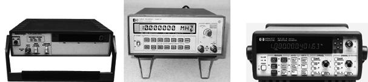
FIGURE 7.60 A selection of used frequency counters. Left: Tektronix CFC-250, dc to 100-MHz counter found new in the box for $95. Center: HP 5385A, 10-Hz to 1-GHz counter with eight-digit display, which comes with two input channels—found for around $200, used, on eBay. Right: HP 5342A, 10-Hz to 18-GHz counter with 12-digit display—expensive.
7.5.9 Computer
It’s a good idea to have a separate computer dedicated for your laboratory. An old one will usually work fine.
You’ll probably use your laboratory computer most often for viewing manufacturer’s component specs, circuit diagrams, electronics online catalogs, and the like. With the Internet, you can grab a complex IC while at your bench and get a complete data sheet with spec and pin assignments from your computer as you prototype—just enter the part number into your favorite search engine. Professional component suppliers Farnell, RS Components, Mouser, Digi-Key, and Newark have links to the data sheets of most of the parts they sell, so even if you do not buy from them, this access is a very useful resource.
Of course, you’ll also use your computer to program microcontrollers. Again, having Internet access is important for downloading other people’s microcontroller source codes, microcontroller editor programs, and program updates.
Having circuit simulator and PCB layout programs on your computer is also handy. (See Section 7.5.22 for more on electronics CAD software.)
If you intend to install plug-in test equipment, make sure your computer comes with the appropriate number of expansion slots and ports. You’ll need a decent computer to run sophisticated plug-in test software.
7.5.10 Miscellaneous Test Equipment
The amount of test equipment for electronics is extensive, and we’ve covered only the standard items so far. Other items include LCR meters, impedance analyzers, logic analyzers, spectrum analyzers, modulation analyzers, cable testers, power meters, network analyzers, and various specialized telecommunication equipment, to name a few. Fortunately, most of these items are not necessary for most hobby-type experimentation. If you’re dealing with modulation analysis and spectrum analysis, chances are you’re working or studying at an institution that has the necessary equipment; there’s no need to shell out huge bucks for something you can borrow.
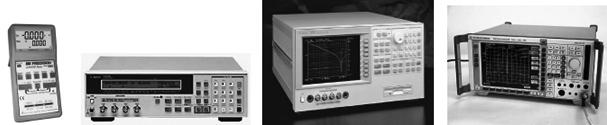
FIGURE 7.61 (a) BK-Precision LCR/ESR meter for measuring impedance (Z), inductance (L), capacitance (C), DCR, ESR, D, Q, and Ø, with wide range of test frequencies up to 100 kHz. Comes with four-wire testing that reduces error due to lead length. Used for spot frequency testing at various frequencies. (b) Agilent 4263B LCR meter capable of measuring more parameters (|Z|, |Y|, q, R, X, G, B, C, L, D, Q), with greater precision than the preceding meter. (c) Agilent impedance analyzer, unlike an LCR meter, can do continuous frequency sweeps and provide graphic analysis. Used to measure impedance and even capable of measuring material permitivity and permeability. Measures parameters such as |Z|, |Y|, q, R, X, G, B, L, C, D, and Q from a range of 40 Hz to 110 MHz. Extremely small variations in component characteristics can be precisely evaluated with sweep measurements of 0.08 percent accuracy. Good instrument for evaluation of capacitors, inductors, resonators, semiconductors, and other materials such as PCBs and toroidal cores. (d) Rohde & Schwartz spectrum analyzer that measures the frequency spectrum of a signal (signal amplitude versus frequency). Spectrum analyzers are used over a range of frequencies and may have different names, depending on their application. Used primarily for studying noise levels, dynamic range, frequency range, and transmitting power levels when troubleshooting radio equipment.
7.5.11 Multifunction PC Instruments
Multifunction PC instruments, both expensive and reasonably priced, are growing in popularity. One in particular that caught my eye is the TINALab II by DesignSoft. In conjunction with TINAPro circuit simulator software (also by DesignSoft), the little TINALab II box (see Fig. 7.62) acts as a multimeter (optional), oscilloscope, logic analyzer, signal analyzer, signal/function generator, and spectrum analyzer—all in one. The box is connected to your laptop or desktop using a USB or RS232 interface. In TINAPro, with a click of the mouse, you can jump between different screens representing different test instrument panels and test plots.
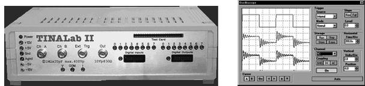
FIGURE 7.62 TINALab II from DesignSoft acts as a multifunction PC test instrument. Comes with digital oscilloscope, multimeter (optional), logic analyzer, signal analyzer, signal generator, and spectrum analyzer. Requires TINAPro circuit simulation software.
Perhaps the most intriguing feature of DesignSoft’s package is the ability for TINAPro to act as both a simulator and a real-life tester at the same time. For example, if you’re designing an amplifier circuit, using an op amp, a few capacitors, and resistors, you can first create a model of the amplifier in TINAPro and run a simulation, using the simulator’s virtual instruments (virtual oscilloscope, virtual Bode plotter, and so on) to display the circuit’s behavior. Next, using a prototype board and discrete components, you can build the real-life circuit, and then test it using the TINALab II interface. Results of the simulation and real-time test results measured by TINALab II can be displayed next to each other on the same screen. If something is wrong with either the simulation or the real circuit, you can alter the circuit schematic and see if the simulation works, and then go to the real circuit, make the same alteration, and see if it works. This is not only a great troubleshooting tool, but also a nice visual, hands-on way to learn electronics.
Here’s a rundown of TINALab II’s features:
Digital oscilloscope: Two-channel, 50-MHz bandwidth, 10/12-bit resolution, 4 GS/s equivalent sample rate on repetitive signals, and 20 MS/s for single-shot mode. Full-scale input range is ±400 V, with 5-mV/div to 100-V/div ranges.
Multimeter (optional): DC/AC from 1 mV to 400 V, and 100 (μA to 2 A, with dc resistance from 1 Ω to 10 MΩ.
Function generator: Synthesized sine, square, ramp, triangle, and arbitrary waveforms from dc to 4 MHz, with logarithmic and linear sweep, and modulation up to 10 V peak to peak. Arbitrary waveforms can be programmed via the high-level language of TINAPro’s interpreter.
Signal analyzer: Works in conjunction with the function generator, and measures and displays Bode amplitude and phase diagrams and Nyquist diagrams. It also works as a spectrum analyzer.
Logic generator and logic analyzer: Separate 16-channel digital inputs and outputs for generating or testing digital signals up to 40 MHz.
Other: Power supplies (±5 V, ±15 V), test card slot for plugging in experimenter modules.
TINALab II costs about $1,700, and the TINAPro simulator program is around $300 for the classic version and around $600 for the industrial version. This is a decent utility, considering all the instruments and software you get in a small package. However, be aware of certain limitations, such as bandwidth, that could lead to problems later on. For more information, check out DesignSoft’s website at www.tina.com.
7.5.12 Isolation Transformers
If you plan to do work on line-power circuits such as TVs or switch-mode power supplies, or any line-power circuits that have no input isolation (no input transformer) and have a “floating ground” at a potential other than earth ground, use an isolation transformer between the line power and the circuit being tested. Attempting any repairs or simply sticking an oscilloscope’s ground lead into such circuits without using an isolation transformer can lead to nasty shocks, blown circuit components, and melted test equipment probe tips.
Figure 7.63 shows a simple mains isolation transformer. Isolation transformers are 1:1, meaning that the windings of the primary and secondary are equal in number so there is no increase or decrease in current or voltage between the primary and the secondary. The transformer is designed to isolate the load from the source and provide ground fault protection.
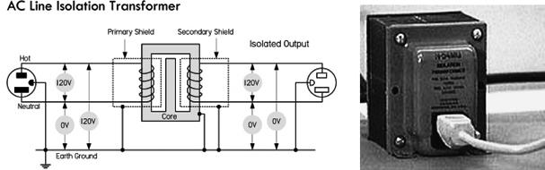
FIGURE 7.63 Basic schematic of a mains isolation transformer used to isolate the load from the source, as well as provide ground fault protection. An isolation transformer should be used whenever you work on nongrounded equipment with no input isolation, such as switch-mode power supplies. Notice that the voltage difference from secondary winding leads to earth ground is 0 V, unlike the 120-V difference in the primary side from hot to earth ground.
In your home wiring, the neutral (white) and the ground (green) connections are tied together at the main junction box, so they are basically at the same potential: 0 V, or earth ground. If you accidentally touch the hot wire while being in contact with a grounded object, current will pass through your body and give you a potentially fatal shock.
With an isolation transformer, the secondary winding leads act as a 120-V source and return, similar to the mains’ hot and neutral, but with an important difference. Neither the secondary source nor the return runs are tied to earth ground! This means that if you touch the secondary source or return while being in contact with a grounded object, no current will flow through your body. Current wants to pass only between the secondary source and the return runs. Note that all transformers provide isolation, not just line isolation transformers. Therefore, equipment with input power transformers already has basic isolation protection built in. Figure 7.64 shows a simple way to construct an isolation transformer using two standard 120-V/12-V transformers, back to back.
FIGURE 7.64 The illustration on the left shows how a switch-mode supply can be dangerous. Without the use of an isolation transformer, a ground lead of a scope connected to point A will blow out one of the bridge diodes, while vaporizing the scope probe tip. The illustration on the right shows how to construct a simple isolation transformer using two standard 120-V/12-V transformers, back to back.
Isolation transformers are also typically constructed with two isolated Faraday shields between the primary and the secondary windings. The use of the two shields diverts high-frequency noise, which would normally be coupled across the transformer to ground. Increasing the separation between the two Faraday shields minimizes the capacitance between the two and hence the coupling of noise between the two. Therefore, the isolation transformer acts to clean up line-power noise before being delivered to a circuit.
When do you need an isolation transformer? Well, for instance, within some TV sets, the inside cases are about 80 to 90 V above earth ground. If you open up a set and start fiddling around, you are liable to receive a nasty shock, since the test equipment and yourself are at a ground (earth ground) that is 90 V below the TV’s internal ground. If you connect a scope to your TV’s ground, you create a ground loop, which is bad. In an older TV, there is no provision to protect its circuit from this kind of short.
Likewise, switch-mode power supplies all require the use of isolation transformers when servicing. For example, a basic switch-mode power supply, like the one shown in Fig. 7.64, has a hot side and a cold side. There is an extreme shock hazard on the hot side of any switch-mode supply. Also, there is usually a diode bridge on the input. This means that the negative side of the filter capacitor is always one diode drop removed from the hot side of the ac power line. If you were to connect a scope ground to the “floating ground” side (point A) of the filter capacitor, you would blow out at least one of the bridge diodes, regardless of whether a fuse is incorporated into the design. The bridge diode will typically break down first, since connecting the ground lead of the scope places the full line voltage directly across the diode. In addition, you’ll probably vaporize the scope probe lead, burn yourself, and receive a potentially lethal shock.
Isolation transformers are specified in terms of the amount of isolation they can provide, given as the RMS voltage, and by their power ratings, given in volt-amperes (VA). Additional specifications include efficiency and tolerance of voltage regulation. Typically, a 200-VA isolation transformer is sufficient for most modern equipment.
Be extremely careful when dealing with ungrounded equipment. Always use an isolation transformer, and be extremely careful where you place your scope’s ground lead. Do not attempt repairs unless you have a decent scope, total safety isolation, and accurate service information. Again, remember that any misplaced scope ground lead can instantly ruin a line-operated switch-mode supply. Always use an isolation transformer, and think before you connect and measure.
7.5.13 Variable Transformers, or Variacs
A variable transformer, or Variac, is a very useful device that acts like an adjustable ac voltage source. Its construction is that of an autotransformer, whose primary is connected to the hot and neutral of the 120-V line voltage, while the secondary leads consist of the neutral and an adjustable wiper that moves along the single core winding (see Fig. 7.65). Make sure the neutral is the common lead taken at the output. Don’t use the hot lead; otherwise, the whole apparatus may be raised to live potential with respect to ground.
FIGURE 7.65 (a) Nonisolated 120-V Variac whose output voltage is varied by rotating a wiper. (b) Nonisolated 240-V Variac. (c) A homemade variable ac supply with isolation protection provided by means of an isolation transformer. (d) ac power supply that houses an isolation transformer, Variac, switch, fuse, ac outlet, and meter.
Being able to adjust the line voltage is a very useful trick when troubleshooting line-power equipment, where the fuse instantly blows at normal line voltage. Even without a fuse blowing, troubleshooting at around 85 V may reduce the fault current. Also, gradually increasing the voltage supplied to recently repaired equipment, such as a monitor, is a good way to ensure there are no problems; you can monitor the exact point where failure occurs.
Be aware that a Variac by itself does not provide isolation protection like a standard or isolation transformer, since the primary and secondary share a common winding. Therefore, if you plan to do work on ungrounded, “hot chassis” equipment, like that mentioned in the previous section, you must place an isolation transformer before the Variac, never after. If you don’t, shock hazards await. Figure 7.65c shows a schematic of such an arrangement. It includes a switch and fuse protection, as well as current and voltage meters, all of which create an adjustable, fully isolated ac power source. A 2-A Variac should suffice for most applications, although a 5-A or larger model isn’t bad.
To avoid the hassle of cascading a Variac and isolation transformer together, simply get an ac power supply that houses both elements in one package. B+K Precision’s 1653A ac power supply, for example, has a 0- to 150-V ac, 2-A Variac, an isolation transformer, and a current/voltage meter, all in one package. Similar ac power supplies can be found on eBay for around $50 (see Fig. 7.65d).
7.5.14 Substitution Boxes
Resistance, capacitance, inductance, and RC substitution boxes are nice to have around when you are trying to find the best resistance, capacitance, inductance, or RC circuit values needed within a circuit. Figure 7.66 shows a variety of commercial R, C, L, and RC-combination substitution boxes from IET Labs, Inc. (www.ietlabs.com). To select the desired resistance, capacitance, or inductance, simply dial in the value using the labeled thumbwheel switches. Voltage-divider substitution boxes are also available and can be extremely handy when determining the best voltage divider network for a given prototype. Substitution boxes aren’t cheap, but the convenience and accuracy they provide is often well worth the cost.
FIGURE 7.66 Selection of resistance, capacitance, inductance, and RC boxes from IET Labs, Inc. Resistance boxes come in seven- (0 to 9,999,999 Ω, 1-Ω resolution) and nine- (0 to 99,999,999.9 Ω, 0.1-Ω resolution) decade types. Capacitance boxes come in six (0 to 99.9999 |iF, 100-pF resolution) decade types. Inductance boxes come in three (999 mH, 1-mH resolution) and four (9.999 mH, 1-mH resolution) decade types. RC boxes come with mixed decade selections given in provision R and C boxes. Uses thumbwheel switches to dial in resistance, capacitance, and inductance values. Accuracy is typically 1 percent or better.
Figure 7.67 shows a circuit diagram of a typical 0 to 9,999,999-Ω decade resistance box with 1-Ω resolution. Each wheel represents a decade, or a multiple of 10. Each resistor within a given wheel is of the same value—1, 10, 100, 1K, 10K, 100K, 1M, and so on—depending on the wheel it happens to be in. To select a desired resistance, you turn each switch to the appropriate position, thus placing resistors in series.
FIGURE 7.67 Resistor decade box made using thumbwheel switches.
One-half-watt metal film resistors are a good choice for the resistors within the box. If you wish to create a decade box with a  -ohm range, the resistors of the place wheel should be of a wirewound variety or made of resistive wire. Be aware, however, that wirewound resistors are coiled like an inductor, so they can create inductive effects that can mess up the operation of some high-frequency circuits.
-ohm range, the resistors of the place wheel should be of a wirewound variety or made of resistive wire. Be aware, however, that wirewound resistors are coiled like an inductor, so they can create inductive effects that can mess up the operation of some high-frequency circuits.
Although making a resistance decade box is feasible, trying to put together a capacitance, inductance, or RC decade box isn’t worth the effort; the low-tolerance components are too expensive, while the construction process is messy and time-consuming. It’s better to simply buy a custom box from the manufacturer. However, you can still put together some simple substitution boxes, like the RC boxes in Fig. 7.68, without too much work. Though they aren’t decade boxes—they can’t dial in any possible component value—they can provide an adequate range or at least provide values that coincide with popular standard component values (10, 22, 33, 47, 56, 68, 82, and so on) that you find in the component catalogs.
FIGURE 7.68 Left: A Series RC substitution box that can be constructed using plastic-film-dielectric tuning capacitor of 10 to 150 pF (or whatever is suitable) and a 10-kΩ, one-turn potentiometer. Right: Custom RC substitution box that can be switched to various modes: resistance-only, capacitance-only, RC-series, and RC-parallel.
For example, a simple low-capacitance series RC substitution box, shown to the left in Fig. 7.68, is made with a plastic-film-dielectric tuning capacitor of 10 to 150 pF (or whatever is suitable) and a 10-kΩ, one-turn potentiometer. Another custom RC substitution box that can be switched to various modes (resistive-only, capacitance-only, RC-series, and RC-parallel) is shown to the right in Fig. 7.68.
The selection of component values is up to you. Here, component values were chosen to coincide with popular component values produced by manufacturers. Eighteen-position rotary switches can be used to select R and C values. A typical selection of capacitor types is 100- to 900-pF mica, 0.001 to 0.009 in polystyrene, 0.01- to 0.9-μF polycarbonate, 1- to 9-μF polyester, and 10-μF and up tantalum or electrolytic (be careful to maintain the proper polarity across polarized capacitors). Often, for high-precision, low-capacitance values, air-dielectric tuning capacitors are used. One-half-watt, 1 percent metal film resistors provide good tolerance for all resistances above 1 Ω. Below 1 Ω, wirewound resistors or resistive wire can be used, though, again, be aware of inductive effects of wirewound resistors at high frequencies.
7.5.15 Test Cables, Connectors, and Adapters
Make sure you have a variety of test cables, connectors, and adapters at your disposal. This includes BNC, banana, hook, alligator, 0.100 male headers and 0.156 sockets, phone, RCA, and F. You never know what kind of connector will be needed when you start troubleshooting some new circuit or piece of equipment.
FIGURE 7.69
7.5.16 Soldering Equipment
Soldering Iron
For most electronics work, a low-wattage, pencil-shaped soldering iron, from 25 to 40 W, will work fine. For very small components and pads, you may need to go to a 15-W iron. Very large connections may require a 50-W iron.
Adjustable temperature-controlled irons with digital displays are best, but this doesn’t mean you can’t get good results from $10 fixed-temperature irons with the proper tip wattage. Large irons and solder guns should not be used on any electronic assemblies or PCBs. Use them only on very large joints, such as between a large stranded wire (14-gauge or larger) and an aluminum chassis.
Figure 7.70 shows plans for building a soldering iron with low standby power, as well as plans for building a temperature-adjustable soldering iron using a fixed-temperature soldering iron.
FIGURE 7.70 Various soldering items: temperature-controlled soldering iron with digital display of tip temperature, roll of 60/40 rosin-core solder wire, solder pump, PanaVise Electronic Work Center for holding circuit boards while soldering.
In terms of tip size and shape, make sure to get an iron tip that is big enough for the job. The tip of the soldering iron should be small enough so that the joint being soldered can be seen easily, but should be large enough to quickly transfer the heat required to increase the joint temperature past the solder melting point. A chisel (spade) tip that is between 0.05 in. and 0.08 in. across the spade is ideal for general-purpose work. Smaller tips are required for small pads and surface-mount components.
Make sure your iron is powerful enough and hot enough. An iron that hasn’t reached full temperature or that is set at too low a temperature can easily delaminate a trace or pad and can also fry components. This occurs due to overheating—a result of needing to apply heat for too long a duration to get the solder to melt.
Also, make sure you know whether your iron’s tip is grounded (ESD-safe) or floating. In certain situations, a grounded soldering iron is required (for example, when soldering static-sensitive devices).
Solder and Fluxes
The solder types most commonly used for electrical connections are 60/40 (SN60) and 63/37 (SN63) solder. The terms 60/40 and 63/37 specify the alloy content: 60 percent tin/40 percent lead and 63 percent tin/37 percent lead, respectively. Other solders may come with different percentages and metals, such as 62/36/2 (62 percent tin/36 percent lead/2 percent silver). The melting point for 60/40 and 63/37 solder is 361°F. The 63/37 solder is excellent for small, heat-sensitive components and PCB pads; 60/40 is reserved more for general-purpose work. Both 60/40 and 63/37 solder come with either a rosin flux core or a solid (without flux) core. Rosin flux core solder is usually the preferred choice for electronics.
If you plan to use solid core solder, you’ll need some flux paste or flux liquid. The flux paste or liquid must be applied to the metal surfaces to be joined before soldering takes place. When the soldering iron is placed on the flux-coated surfaces and heated, the flux will act as a chemical cleaner, removing oxidation from the metal surfaces and ensuring a good conductive solder joint. After soldering is complete, the remaining sticky flux residue should be removed with a defluxer (sometimes isopropyl alcohol is used, or even water, if the flux core is water-soluble). This prevents dirt from collecting in left-behind flux residue—something that can create low-resistance pathways between PCB pads.
When using flux core solder, the inner flux core seeps out while the outer alloy coating is melted. Generally, when using flux core solder, no additional flux is required. However, before soldering takes place, the surfaces to be soldered should not be visibly oxidized. Fine-grade steel wool or sandpaper can be used to polish the surfaces prior to soldering.
As a final note in regard to solder fluxes, never use corrosive (acid core) or conductive fluxes to solder electronic components. Use only mild fluxes such as those contained in rosin core solder or rosin flux.
Solder wire comes in a variety of wire diameters. The following list describes standard diameters and their intended uses.
0.020/0.508 mm (25 gauge) or smaller: This is excellent for soldering very small PCB pads and hand-soldering surface-mount components. However, it is too small for use as a general-purpose bench solder. It takes excessive heating time to apply sufficient solder to larger joints.
0.031/0.79 mm (21 gauge): This is excellent all-around solder for PCBs and general building and electronic repair.
0.040/1 mm (19 gauge) or larger: This is good for larger connections like tinning or connecting 14-gauge or larger wires to terminal strips, and soldering large stranded wires and other large components to aluminum chassis. It is not good for PCB soldering because excessive solder can be easily applied to pads, increasing the potential for undesired solder bridges between points.
When soldering traditional lead solder, your iron should be set to a temperature of around 330°C (625°F). Lead-free solders will require a higher temperature to melt well, typically around 400°C (750°F). If a joint is proving difficult to solder and will not flow, then a flux pen can be useful to get the solder flowing.
Solder-Removing Tools
To free components or clean up unwanted solder spillover, make sure you have a desoldering tool you’re comfortable using. Here is an overview of the various tools that are available:
Desoldering pump (solder sucker): The tool is applied to the joint that has been heated to the solder’s melting point. A plunger is activated, which sucks the solder into the tool’s reservoir. If done properly, this method can remove solder to the point that the component leads can be lifted away from the metal to which they were joined. You may need an antistatic solder sucker when dealing with static-sensitive components; an ordinary solder sucker can generate high voltages as a result of internal friction. If you can’t get everything with the sucker, try cleaning up the fine stuff using a desoldering braid.
Desoldering braid (solder wick): This consists of a copper braid impregnated with non-corrosive flux. The braid is laid on top of the solder joint to be desoldered, and the hot soldering tip is applied to the braid. As a result of capillary action, solder will flow toward the heat of the tip and away from the joint. This is used mainly if the joint doesn’t have too much solder and when dealing with narrow PC traces where a sucker may cause problems, or in static-sensitive situations where a non-static sucker isn’t available. It’s a good choice for cleaning out solder holes in PCBs, as well as removing small solder splatters and solder bridges between IC leads.
Desoldering irons: If you anticipate the need, desoldering irons with attached vacuum suckers can really speed things up. The iron melts the solder, and then the vacuum is energized and sucks the molten solder into a reservoir for disposal. Desoldering irons are fairly expensive devices, but they are convenient.
Your soldering station should also have a damp sponge to keep your soldering tip free from excess solder and contamination. Special solder tip cleaning pastes also exist, and they do a decent job of removing oxidized material from the iron’s tip. A wire brush, a file, and steel wool are nice to have around for removing built-up oxidation that may coat the solder tip. However, be sure to “tin” the tip immediately afterward by melting solder with it, then brushing off the excess with a soft cloth to form a smooth, silvery soldering surface; otherwise, the tip will oxidize.
FIGURE 7.71 Soldering iron tips and heating elements will last longer if operated at reduced temperature. The circuit shown in (a) accomplishes this by half-wave rectification of the applied ac cycle. With current flowing in only one direction, only one electrode of the neon bulb glows. By closing the switch, the diode is effectively short-circuited and full power is applied to the soldering iron, igniting both bulb electrodes brightly. For safety, the circuit should be enclosed in an aluminum chassis. A 30- to 40-W soldering iron works well. A square metal tray can be used to hold a sponge. Use machine screws and nuts to secure the iron holder. A sealer must be used around holes in the sponge tray to prevent moisture from leaking into the electrical components. A ID grommet can be used to install the neon bulb. Heat shrink is used to insulate its leads.
A temperature control gives greater flexibility than the simple control just described. An incandescent-light dimmer can be used to control the working temperature of the tip. (b) shows a temperature control built into an electrical box. A dimmer and a duplex outlet are mounted in the box, as shown in the wiring diagram. The dimmer controls only one of two ac outlets. Normally, a jumper on the duplex outlet connects the hot terminals of both outlets together. This jumper must be removed. The hot terminal is narrower than the neutral one and typically uses a brass connecting screw. The neutral terminal remains interconnected. The dimmer can be purchased at any hardware or electrical store.
7.5.17 Prototyping Boards
Solderless Breadboards
Get a large solderless breadboard with plenty of rows and columns, IC channels, and power buses, along with banana terminals for external power supply connections. You’ll find additional breadboards and socket-and-bus strips helpful as well. Breadboards will accept component lead diameters from 0.3 to 0.8 mm (20 to 30 AWG).
A note of caution: solderless breadboards are not good for building high-frequency RF circuits. The spring-loaded metal strips inside the board add too much stray capacitance to the circuit. Also, breadboards should not be used for high-current circuits above 100 mA or so.
Design Labs or Project Boards
Design labs or project boards are worth checking out, especially if you’re into experimenting. Along with a large breadboard, these devices usually have a built-in power supply (fixed and variable) and function generator, as well as on-board components such as potentiometers, switches, LED indicators, and speakers. Though some individuals may shy away from such labs because of their “amateur appeal,” they are, in fact, very convenient and practical—you avoid a lot of repetitive wiring, while keeping your work area in order.
FIGURE 7.72 Left: Typical design lab. Center: Solderless breadboard. Right: Various perforated boards.
Following are various types of PCBs:
Blank copper-plated boards: It’s nice to have both single- and double-sided clad boards. These are useful in ground-plane construction, where the circuit is built on the unetched side of the board, and wherever a component connects to ground, its lead is soldered to the copper board. Ungrounded connections between components are made point to point.
Bare perforated construction boards: These are phenolic or fiberglass circuit boards with perforations every 0.1-in., allowing common electronic devices to be mounted. These boards have no pads or buses, and are good for making “quick-and-dirty” circuits by bending the leads underneath the board and tacking them with solder. Large boards can be cut to any size desired.
Perforated boards with pads and buses: There are a variety to choose from, with varying pad and bus geometries, such as pad-per-hole, buses only, three-hole solder pads, ground plane, and volt/ground planes. A wide variety is nice to stock, but you can choose according to your needs.
PCB kit: These are designed for making your own custom PCBs. You can pick up a kit from RadioShack for $15, complete with two 3 × 4½-in. copper-clad circuit boards, a resist-ink pen to create circuit patterns, etching and stripping solutions, an etching tank, and  -in. drill bit, complete with instructions. There are more professional methods for making PCBs, but such kits are simple and good for small projects.
-in. drill bit, complete with instructions. There are more professional methods for making PCBs, but such kits are simple and good for small projects.
SURFBOARDS: These boards are an important breadboarding medium for surface-mount components. They act as adapters that convert surface-mount component footprints to a single in-line (SIP) format with 0.100-in. centers, making them compatible with breadboard sockets. They are used for constructing arrays (such as resistor, capacitor, diode, and transistor arrays) and other surface-mount sub-assemblies, and for evaluating surface-mount ICs.
7.5.18 Hand Tools
Wire Strippers and Cutters
First and foremost, get yourself a good set of wire strippers with built-in inner cutters, like those made by Ideal and GB Electronics. You’ll probably want two: one covering wire gauges from 10 to 18, and another for covering 16 to 26. An additional pair of 4- or 5-in. diagonal wire cutters or nippers is also vital for cutting wire, especially in awkward positions where the stripper’s cutters won’t reach.
FIGURE 7.73 (a) Stripper (16–26 AWG). (b and c) Solderless crimping tools with additional features. (d) D-Sub crimping tool. (e) Diagonal cutter.
Crimpers
It’s good to have a general-purpose solderless terminal crimping tool for connecting various spade terminal and butt connectors to wires. The tool should have a separate section for insulated closure and noninsulated closure types, and a crimp gauge range from around 10 to 22.
You might also want to get a D-Sub crimping tool for crimping computer pin sockets, butted insulated connectors, telephone spade lugs, pin and socket contacts, and other noninsulated connectors to wires. The gauge range should be from 14 to 26.
There are many other special-purpose crimping tools, such as BNC, IDC, and modular crimping tools, which you’ll need if you plan to attach connectors to BNC cables, ribbon cables, and telephone or CAT5 cables.
Other Tools